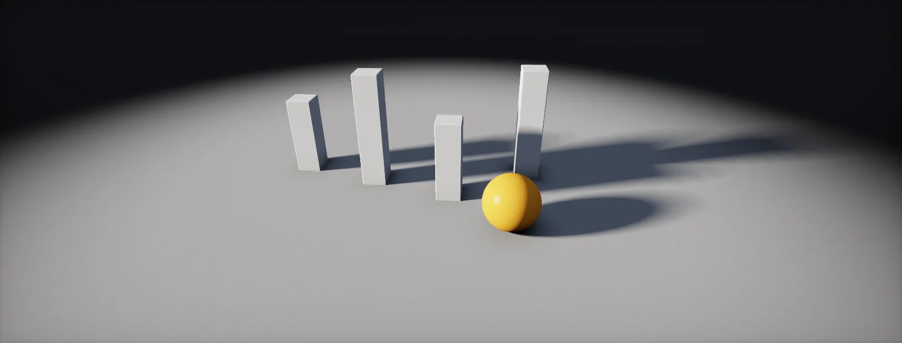

Shadow Maps
Real-time shadows are a second camera at the light and one depth comparison per pixel. This unit builds that comparison, then fixes everything that goes wrong with it: acne, blocky edges, wasted resolution and cost.

Shadow map principle
A point is in shadow if something sits between it and the light. A shadow map answers that with the tool from the depth buffer: first render the scene from the light's point of view, keeping only depth. That image stores, for every direction the light shines in, the distance to the first surface it hits. Then, while shading the camera's view, ask for each pixel: is this point farther from the light than what the light saw first?
Two passes, one comparison per pixel. Everything else in this unit is about the ways that comparison goes wrong, and the tricks that fix them.
Light space
To compare, the shaded point must be expressed in the light's own coordinates, exactly like a vertex goes from world to view to clip space for the camera (the chain of spaces). For the sun the projection is orthographic: its rays are parallel, so there is no perspective divide. Light-space x and y become the shadow map UV, light-space z the depth to compare. In the side view, light space is the world rotated by the sun's angle:
Shadow acne and bias
The shadow map has a finite resolution: each texel stores one depth for a whole patch of surface. A surface that is tilted relative to the light is lower than the stored value in half of every texel, so it shadows itself in stripes: . The fix is a : compare against the stored depth plus a small margin, larger for surfaces at a steep angle to the light:
Too much bias has the opposite problem: the shadow starts a little away from the object that casts it, so objects seem to float (peter-panning). An alternative that needs less depth bias is normal offset: move the lookup position along the surface normal by about one texel before projecting it into the shadow map.
Shadow texel size
A directional shadow map covers a square of the world with a fixed number of texels. Divide the size by the resolution and you get the size of one shadow texel on the ground. Compare it with how many screen pixels a metre covers at that distance (texel density) and you know whether the shadow's edge looks crisp or blocky:
PCF filtering
A single comparison gives a hard, pixelated edge. compares the point against several neighbouring texels and averages the results (yes/no, not the depths!). The edge becomes a gradient as wide as the filter:
GPUs do a 2 × 2 PCF in hardware with a comparison sampler (SampleCmpLevelZero), which is why even "hard" shadows look slightly smooth. Real penumbrae get wider the farther the receiver is from the caster; techniques like PCSS estimate that distance first and scale the filter accordingly (the sun's penumbra).
Cascades
One shadow map for the whole view wastes resolution: near the camera you need fine texels, far away coarse ones are enough. split the view distance into ranges and give each its own map of the same resolution. Where to split is a blend between even splits and logarithmic ones, with λ choosing the mix:
Every cascade covers a wider area with the same texel count, so its texels are larger. A visible seam where one cascade hands over to the next is normal; engines blend across a small band to hide it.
Shadow cost
Each shadow map is a full render pass of every object that casts shadows into it. A directional light renders once per cascade, a spot light once, a point light six times, one per cube face. That multiplies draw calls quickly:
Per light: Shadows → Resolution, Update Mode (Every Frame, On Enable, On Demand) to cache shadows of static lights, and slope/normal bias. Cascades are set in the Shadows Volume override (count, splits, border blend). Shadow maps of all lights share one atlas whose size is set in the HDRP asset.
The URP asset sets the main light shadow resolution, the cascade count (1 to 4) and split distances, and the depth and normal bias. Additional lights share one atlas. Soft Shadows toggles PCF filtering.
With Virtual Shadow Maps (UE5 default) the sun gets very large, paged shadow maps cached between frames; only pages that change are re-rendered. Without them, the directional light uses cascades (Dynamic Shadow Distance, Num Dynamic Shadow Cascades, Cascade Distribution Exponent).
Build it in Unity HDRP
HDRP renders shadow maps for you; your job is choosing resolutions, biases, cascades and update rates that fit the budget. The script switches static lights to on-demand shadows, the biggest single saving. Written for Unity 6 with HDRP 17; Unity 2022 LTS works the same apart from a few renamed menu entries.
- HDRP asset > Lighting > Shadows: shadow atlas sizes, the resolution tiers (Low/Medium/High/Ultra) lights can pick from, and Filtering Quality (PCF kernel size, or PCSS for contact-hardening shadows).
- Volume > Add Override > Shadowing > Shadows: Max Distance, Cascade Count and the Split distances (the λ blend of cascades), and the border fade. Shorter max distance sharpens every cascade.
- Per light, Shadows section: Resolution (tier or custom), Slope-Scale Depth Bias and Normal Bias (the bias of shadow acne), Near Plane for point and spot lights, Update Mode.
- Small-scale shadows: Contact Shadows (a screen-space ray march, enable on the light and in a Contact Shadows override) and Micro Shadows (from the normal map and AO) fill in detail the shadow map is too coarse for.
- Add
ShadowOnDemand.csto lights that do not move and only light static objects: their shadow map is rendered once and kept, and you callRefresh()when something under them changes. - Check the cost in the Rendering Debugger (Lighting > Shadows shows the atlas) and in the Profiler's GPU module (shadow passes).
using UnityEngine;
using UnityEngine.Rendering.HighDefinition;
// Renders this light's shadow map only when requested, instead of every frame.
[RequireComponent(typeof(HDAdditionalLightData))]
public class ShadowOnDemand : MonoBehaviour
{
public bool refreshEverySecond; // optional slow refresh for lights over slowly changing scenes
float timer;
HDAdditionalLightData data;
void OnEnable()
{
data = GetComponent<HDAdditionalLightData>();
data.shadowUpdateMode = ShadowUpdateMode.OnDemand;
data.RequestShadowMapRendering(); // render once now
}
void Update()
{
if (!refreshEverySecond) return;
timer += Time.deltaTime;
if (timer >= 1f) { timer = 0f; Refresh(); }
}
// Call this when an object under the light moves, a door opens, and so on.
public void Refresh() => data.RequestShadowMapRendering();
void OnDisable()
{
if (data != null) data.shadowUpdateMode = ShadowUpdateMode.EveryFrame;
}
}Shadows in custom shaders: HDRP Lit graphs receive shadows automatically; Unlit graphs do not, and HDRP does not expose its shadow sampling as a node. For toon looks that need shadows, keep a Lit graph and restyle its lighting (for example a ramp on the diffuse in a Custom Pass), rather than sampling shadow atlases by hand.
URP Asset > Shadows: Max Distance, Cascade Count and splits, resolution, Depth Bias and Normal Bias, Soft Shadows. Per light: shadow strength, resolution tier and biases. Custom URP graphs can sample the main light shadow with MainLightRealtimeShadow(TransformWorldToShadowCoord(positionWS)).
Unreal 5 uses Virtual Shadow Maps by default: very high resolution pages allocated where the screen needs them, cached for static geometry. Biases are Shadow Bias and Shadow Slope Bias on the light; cascaded shadow maps remain available for lower-end targets (Dynamic Shadow Distance, Num Dynamic Shadow Cascades).
Sources and further reading
The formulas and engine details in this unit come from these references. Engine documentation changes between versions.
- TutorialShadow MappingJoey de Vries · LearnOpenGLThe two passes, acne, bias, peter-panning and PCF with code.
- ArticleCommon Techniques to Improve Shadow Depth MapsMicrosoftSlope-scaled bias, fitting the light frustum and PCF in depth.
- ArticleCascaded Shadow MapsMicrosoftCascade selection, splits and blending.
- BookGPU Gems 3, chapter 10: Parallel-Split Shadow Maps on Programmable GPUsFan Zhang, Hanqiu Sun, Oskari NymanThe practical split scheme used in the cascades chapter.